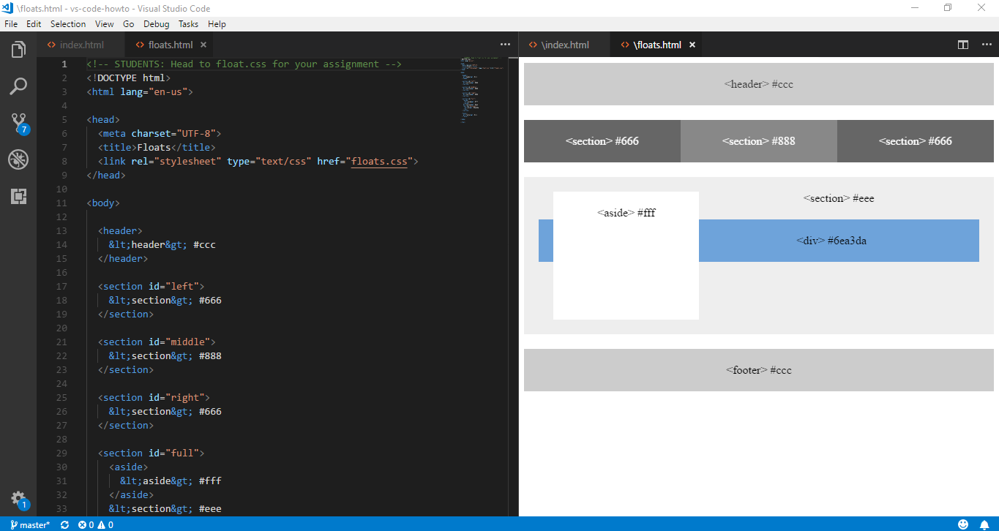
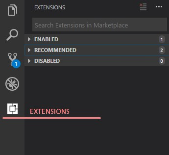
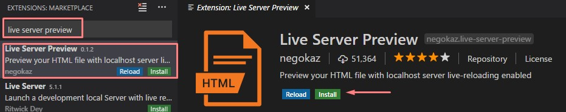
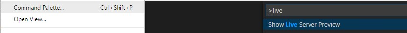

Adding the live preview extension can be a big help with coding in VS Code. No more switching back and forth from browser for simple, quick changes. 
Start by clicking the Extension button. It'll open up a tab where you can search for the extension we're looking for
 Then search for 'live server preview' and install it. Once installed, open an html file and select the 'Command Pallete' to search for the new extension.
Superior Windows Machines Hot Key: F1, Macintosh: squigily line key + 'B'
